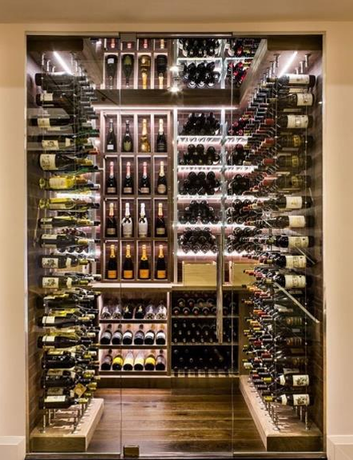

Sobre nós
Há mais de 15 anos, a Vinharia Agnello se dedica à produção de vinhos artesanais de alta qualidade em São Paulo, combinando tradição e inovação em cada garrafa.
Nossa paixão pela vinicultura nos leva a criar experiências únicas para nossos clientes.
Um dos nossos principais diferenciais é o conhecimento que temos para orientar cada cliente na escolha do vinho, na loja ou pelo site.
Conheça quem atende vocêNosso diferencial
Orientar bem é tão importante quanto escolher bem o que vai para a prateleira.
Uvas e regiões
Conhecemos as características de cada tipo de uva, região, vinícola e rótulo, além de outros detalhes importantes.
Harmonização
Sugerimos combinações com diferentes tipos de alimentos e refeições.
Cada ocasião
Indicamos os vinhos mais adequados para cada ocasião de consumo.

Acompanhe um pouco da nossa produção
A produção artesanal de vinho colonial na Serra Gaúcha, uma tradição italiana que inspira cada rótulo da nossa seleção.